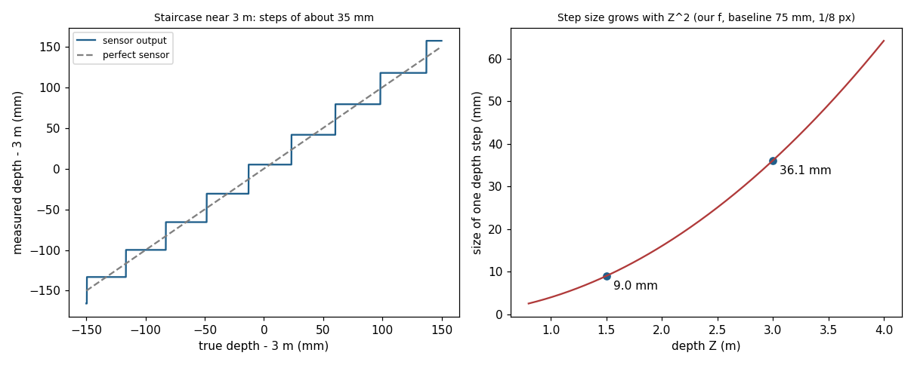

الدرس C2 · الطبقة 1: الحدس
التكميم (quantisation)
1. كيف تقيس كاميرا العمق؟
كاميرات العمق من نوع الضوء المنظّم والستيريو (مثل Kinect) لا تقيس المسافة مباشرة. تقيس إزاحة نقطة بين صورتين، وتسمى التباين (disparity) d وتقاس بالبكسل. ثم تحسب العمق:
Z = f B / d
حيث f البعد البؤري بالبكسل وB المسافة بين العينين (القاعدة، baseline، عندنا 75 مم). نقطة بعيدة تعطي إزاحة صغيرة، وقريبة إزاحة كبيرة.
2. التكميم
الحساس يقيس الإزاحة بخطوات منفصلة فقط، مثلاً بخطوة 1/8 px = 0.125، كمسطرة عليها علامات كل ثُمن بكسل. أي قيمة بينهما تُقرّب إلى أقرب علامة. هذا هو التكميم: تحويل قيمة مستمرة إلى قيم منفصلة.
3. لماذا يصبح الخطأ أكبر مع المسافة؟
الخطوات متساوية في d لكن العمق Z = fB/d معكوس d، فالخطوة المتساوية في d تعطي خطوة في Z تكبر مع المسافة:
step in Z ≈ Z2 · Δ / (f B)
بقيم كاميرتنا (f B = 415.7 × 0.075 = 31.2 px·m، Δ = 0.125):
| Z (m) | depth step | error std = step/√12 |
| 1.5 | 9.0 mm | 2.6 mm |
| 2.0 | 16.0 mm | 4.6 mm |
| 3.0 | 36.1 mm | 10.4 mm |
(قسمة الخطوة على √12 من درس A5 والطبقة 3 في B2: خطأ التقريب المنتظم.) عند 3 م يكون الخطأ 10.4 مم، أكبر من خطأ العمق العشوائي عند 3 م (7.4 مم).
4. الصورة (من الـ Sensor الحقيقي عندنا)

اليسار: العمق المقيس مقابل العمق الحقيقي حول 3 م. بدل الخط المستقيم (المنقط) نرى درجات بعرض حوالي 36 مم. اليمين: حجم الخطوة يزداد مع Z2: 9 مم عند 1.5 م، و36 مم عند 3 م.
5. ما الفرق عن الـ noise؟
- الـ noise العشوائي يتغير في كل إطار. أما التكميم فهو حتمي: العمق الحقيقي نفسه يعطي الرقم المقيس نفسه دائماً. كرة ساكنة تعطي العمق ذاته في كل إطار (خطأ ثابت لا يتلاشى بالمتوسط).
- كرة تتحرك ببطء يبقى عمقها ثابتاً ثم يقفز درجة كاملة.
ملاحظة صدق مهمة: التكميم في كودنا مغلق افتراضياً، ولا يستعمله أي من الشروط الستة. هو خيار في نموذج المستشعر نختبره لاحقاً. أما في عالمنا المستوي فالعمق في الأصل غير ضروري (B1 L5)، فتأثيره على النتائج سيكون صغيراً أصلاً.
سؤال للتأكد (احسب بنفسك)
كم خطوة العمق عند Z = 2.5 m بقيم كاميرتنا (f B = 31.2، Δ = 0.125)؟
القادم: C2 الطبقة 2 (التعريفات الدقيقة والاشتقاق: Z = fB/d، وتوزيع الخطأ).